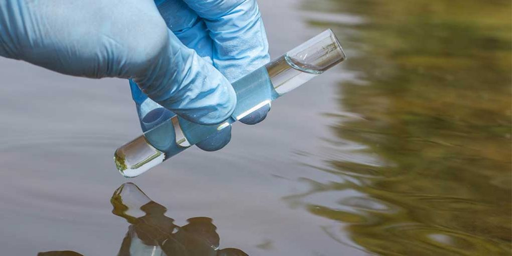

Ensure Safe and Clean Water
for a Healthier Tomorrow
Regular water testing helps detect harmful contaminants, ensuring the safety and quality of your drinking water. Protect your health with reliable testing methods.
About Water Testing
Water quality is essential for human health and well-being. Testing water ensures that it is safe to drink and free from harmful contaminants. Regular water testing analyzes for pollutants such as bacteria, lead, chlorine, and other chemicals that may impact health. This process is vital for identifying unsafe levels of contaminants and ensuring water meets regulatory standards for drinking. By ensuring proper treatment and monitoring, water testing helps protect against waterborne diseases and contributes to long-term public health safety.